OTOKKI RICE PANTRY
오늘의 고소한 쌀 한입달지 않고 담백하게
우리 쌀의 고소함을
바삭하게!
우리쌀 라이스칩
당해년도 수확한 햅쌀로 만들어
기름에 튀기지 않고 바삭하게 구웠어요.
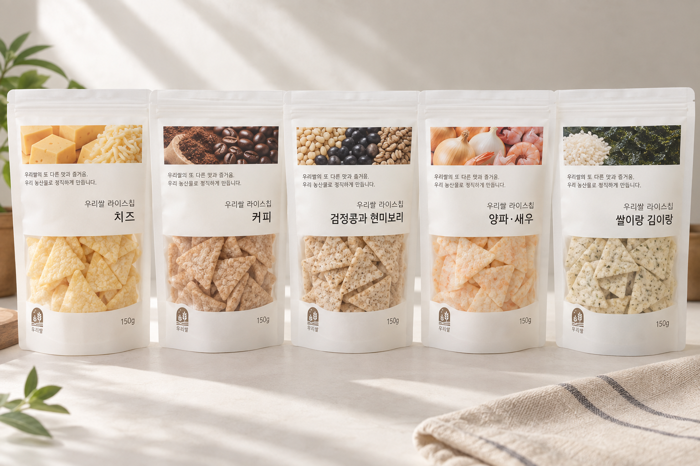
THREE GOOD POINTS
한눈에 보는
우리쌀의 담백함
햅쌀
튀기지 않고
5가지 맛
※ 상세 표현은 실제 제품 표시사항 확인 후 최종 확정합니다.
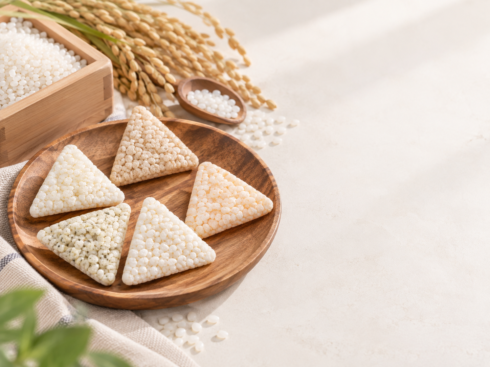
POINT 01
NEW HARVEST RICE
당해년도 햅쌀로
쌀 특유의
고소함을
쌀을 주원료로 만들어
우리 쌀과자만의 담백한
풍미를 느껴보세요.
POINT 02
BAKED, NOT FRIED
튀기지 않고
바삭하게!
1차 압착 후 추가로 살짝 구워
기름진 느낌은 줄이고 바삭한 식감을 살렸습니다.
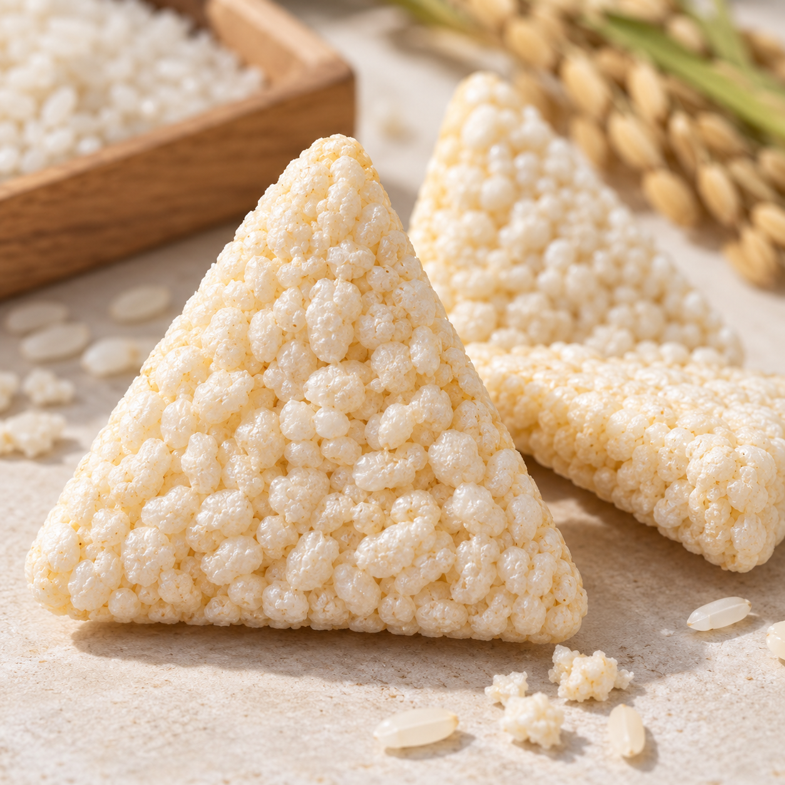
POINT 03
MILD & SAVORY
과하게 달지 않아
더 고소하게
강한 단맛 대신 쌀과 원재료가 가진
고소하고 담백한 풍미를 중심으로 즐겨보세요.
“일상에서 가볍게 즐기는
담백한 쌀 간식”
POINT 04
FIVE FLAVORS
오늘은 어떤 고소함을
고를까요?
담백한 곡물부터 치즈, 양파와 새우,
커피, 김까지 취향에 따라 골라보세요.
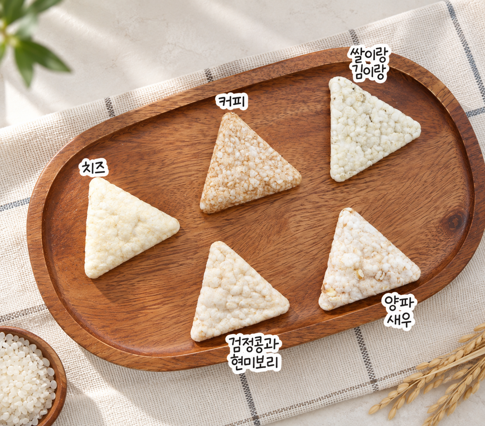
RICE CHIP COLLECTION
다섯 가지 맛을
하나씩 만나보세요
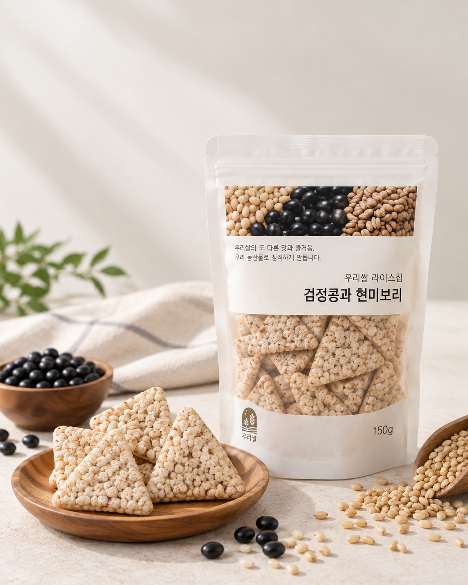
OPTION 01
검정콩과 현미보리
여러 곡물의 고소함을 한입에,
담백하게 즐기는 기본 라이스칩

OPTION 02
치즈
바삭한 햅쌀에 치즈의
진하고 고소한 풍미를 더한 맛
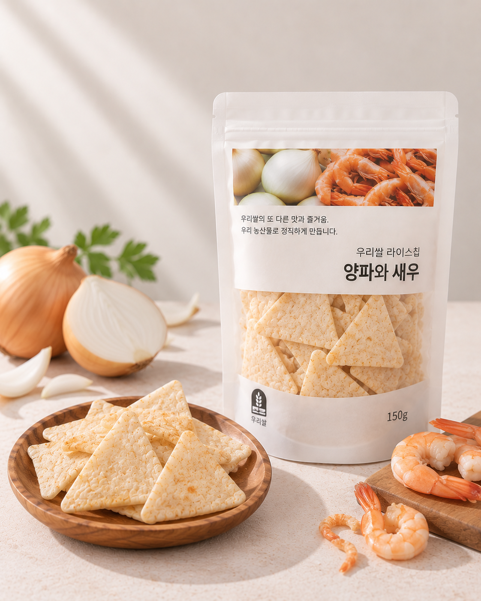
OPTION 03
양파와 새우
은은한 양파 풍미에 새우의
감칠맛을 더한 고소한 한입
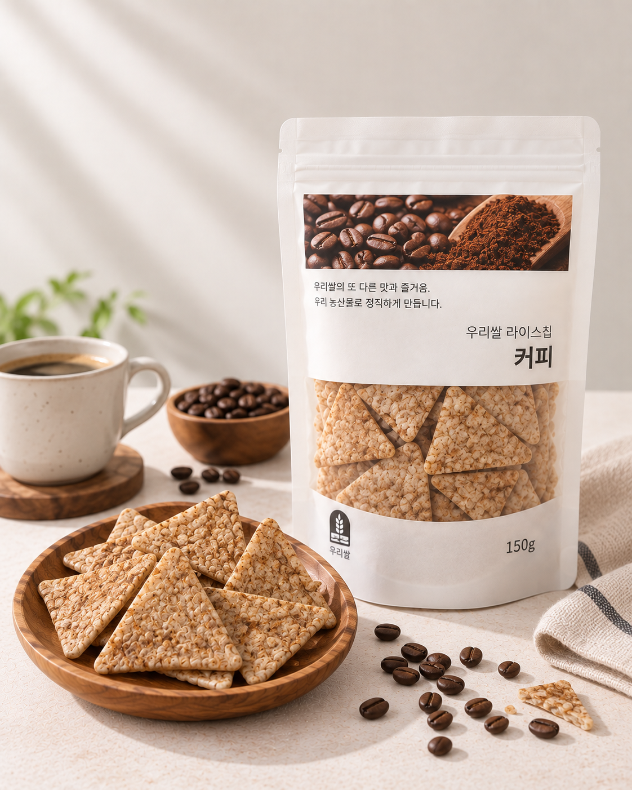
OPTION 04
커피
바삭한 라이스칩에서
은은하게 퍼지는 커피향
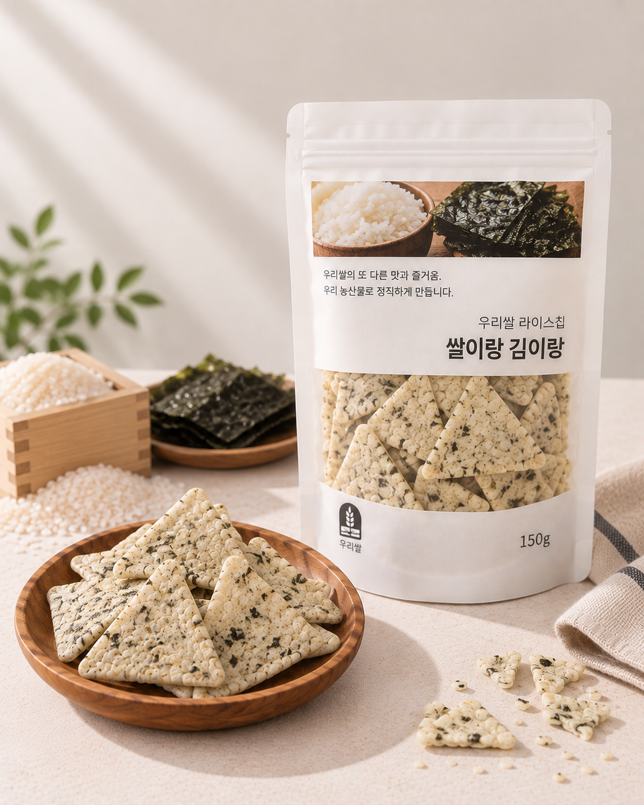
OPTION 05
쌀이랑 김이랑
햅쌀에 김의 구수함과
감칠맛을 더한 친숙한 맛
※ 맛별 원재료·원산지는 실제 표시사항 기준으로 최종 표기합니다.
EVERYDAY SNACK
출출한 순간,
고소함을 꺼내요
조용한 티타임 간식
간편하게 챙기는 스낵
외출할 때 함께하는 간식
취향대로 골라 먹는 즐거움
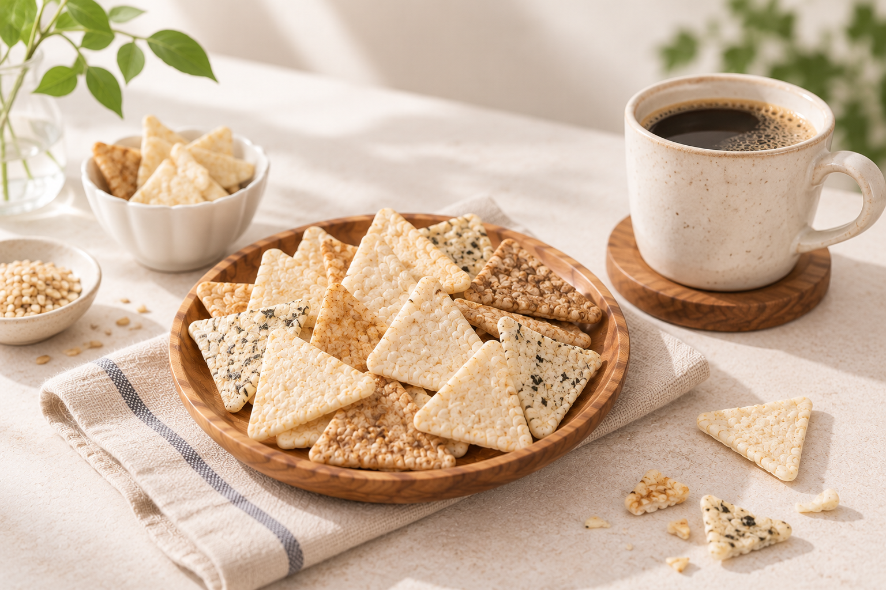
PACKAGE & SCALE
크기와 포장 모습을
한눈에
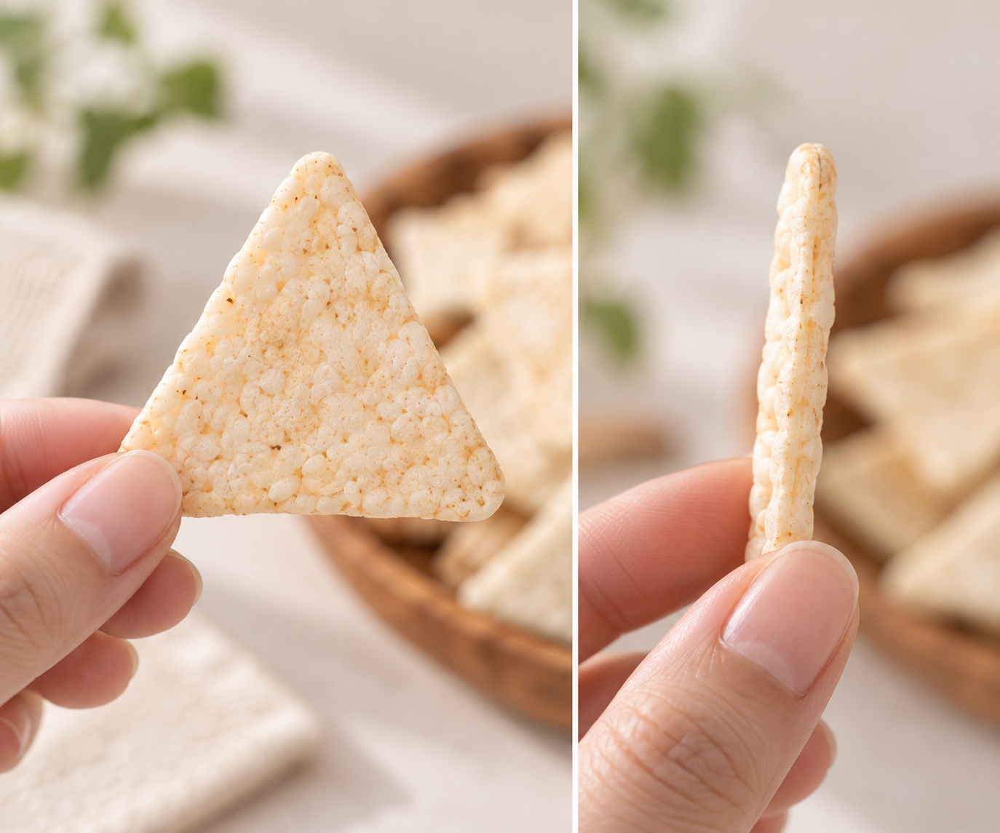
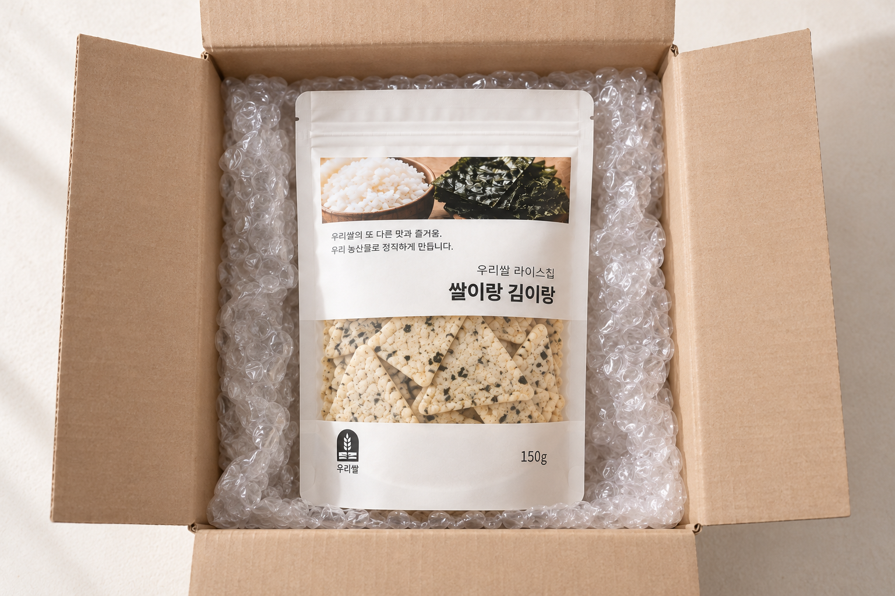
※ 포장재와 포장 방식은 주문 수량 및 배송 환경에 따라 달라질 수 있습니다.
PRODUCT INFORMATION
상품정보
공통 정보는 한 번만,
옵션별 차이는 가로형으로 간결하게 정리했습니다.
식품의 유형곡류가공품
내용량150g
포장재질PE
제조원쌀이랑식품
소비기한전면 상단 표기일까지
반품 및 교환구입처 및 판매원
보관방법 고온, 직사광선을 피해 서늘하고 건조한 곳에 보관
OPTION 01
검정콩과 현미보리
우리쌀검정콩과현미보리라이스칩
품목보고번호201503686626
원재료명
쌀(국산), 현미보리(국산), 현미(국산), 검정콩(국산)
OPTION 02
치즈
우리쌀 치즈라이스칩
품목보고번호2015036826642
원재료명
쌀(국산), 기타가공품(파마산치즈: 외국산), 가공치즈(치즈: 외국산), 천일염(소금: 국산), 올리브유(올리브유: 외국산), 전지분유(우유: 국산), 효소처리스테비아
OPTION 03
양파와 새우
우리쌀 양파와새우 라이스칩
품목보고번호2015036826624
원재료명
쌀(국산), 양파분말(양파: 국산), 새우분말(새우: 국산), 천일염(국산), 효소처리스테비아
OPTION 04
커피
우리쌀 커피라이스칩
품목보고번호2015036826644
원재료명
쌀(국산), 커피(커피: 브라질, 온두라스, 콜롬비아), 천일염(소금: 국산), 커피(커피: 외국산), 올리브유(올리브유: 외국산), 전지분유(우유: 국산), 가공치즈(치즈: 외국산), 효소처리스테비아
OPTION 05
쌀이랑 김이랑
우리쌀 쌀이랑 김이랑 라이스칩
품목보고번호2015036826635
원재료명
쌀(국산), 조미김(김: 국내산), 북어분말(북어: 러시아), 양파분말(양파: 국내산), 간장분말, 천일염(국산), 효소처리스테비아, 참기름(외국산), 올리브유(외국산)
교차접촉 안내: 새우, 우유, 대두, 조개류(굴)를 사용한 제품과 같은 제조시설에서 제조※ 영양정보와 별도 알레르기 표 대신, 제공된 실제 표시사항의 옵션별 원재료명을 기준으로 정리했습니다.
쌀이랑 김이랑 표시사항 기준: 공정거래위원회 고시 소비자분쟁해결기준에 따라 교환 또는 보상받을 수 있으며, 부정·불량식품 신고는 국번 없이 1399입니다.
PLEASE CHECK
안내사항
택배포장(분할배송)
오토끼마켓의 제품은 각각 출고사가 다른 제품이 있어 분할 포장되어 배송될 수 있습니다.
택배비 또한 별도로 부과됩니다.
교환/반품/오배송
- 식품의 경우 특성상 재판매가 어려워 단순 변심에 의한 교환·반품이 어려우며, 제품 개봉 및 사용으로 상품 가치 훼손 시 교환·반품은 불가합니다.
- 제품 미개봉 또는 훼손 없는 교환·반품이 가능한 단순 변심의 경우 추가 배송비가 발생합니다. 추가 배송비 입금 완료 후 진행 가능하며, 최종 검수가 완료된 후 교환·환불이 완료됩니다. (최대 7일 소요)
- 제품 이상 또는 오배송으로 인한 교환·반품은 제품 사진 촬영 후 고객센터(070-8080-4514) 또는 1:1 문의를 통해 이미지·성함·연락처를 남겨주시면 빠른 진행이 가능합니다.
고객센터
070-8080-4514운영시간 AM10:00–PM5:00
문자를 먼저 보내주시면 빠르게 답변 또는 연락을 드리고 있습니다.